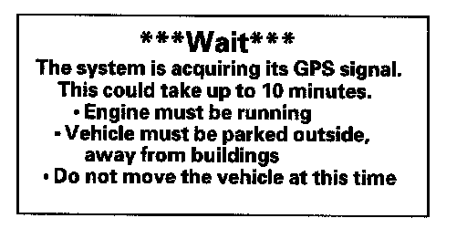
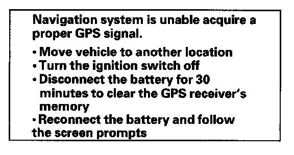

General Troubleshooting Information
General Troubleshooting InformationGeneral Operation
Refer to the Navigation System Manual for the navigation system operating procedures.
Anti-theft Feature
The navigation system and audio unit have a coded theft protection circuit. Be sure to get the client's anti-theft security codes number before;
- Disconnecting the battery.
- Disconnecting the navigation unit 8P connector.
- Removing the No. 7 (10 A) fuse from the under-dash fuse/relay box.
After service, reconnect power to the navigation unit, and turn the ignition switch ON (II). Enter the 4-digit anti-theft security code, then select "Done".
If the code cannot be found, use the Interactive Network (;'N) to look it up. You can view the serial number in the Navi ECU diagnostic screen. Also, you can find the serial number on the navigation unit that is stored under the driver's seat. The serial number is on a label on the bottom of the unit.
When replacing the navigation unit, be sure to give the client's the new anti-theft security code.
Symptom Diagnosis
Certain circumstances and system limitations will result in occasional vehicle positioning errors. Some client's may think this indicates a problem with the navigation system when, in fact, the system is normal. Keep the following items in mind when interviewing client's about symptoms of the navigation system.
Self-Inertial Navigation Limitations
The limitations of the self-inertial portion of the navigation system (the yaw rate sensor and the vehicle speed signal) can cause some discrepancies between the vehicle's actual position and the indicated vehicle position (GPS vehicle position).
The following circumstances may cause vehicle positioning errors:
- Moving the vehicle with the engine stopped and the vehicle stopped, such as by ferry or tow truck, or if the vehicle is spun on a turn table.
- Tire slippage, changes in tire rolling diameters, and some driving situations may cause discrepancies in travel distances. Examples of this include:
- Continuous tire slippage on a slippery surface
- Driving with snow chains mounted
- Abnormal tire pressure
- Incorrect tire size
- Frequent lane changes across a wide highway
- Continuous driving on a straight or gently curving highway
- Very bumpy roads
- Tolerances in the system and map inaccuracies sometimes limit how precisely the vehicle position is indicated. Examples of this include:
- Driving on roads not shown on the map (map matching is not possible)
- Driving on a road that winds in one direction, such as a loop bridge, an interchange, or a spiral parking garage
- Driving on a road with a series of sharp hair-pin turns
- Driving near a gradual highway exit or transition
- Driving on one of two close parallel roads
- Making many 90 degree turns
Global Positioning System (GPS) Limitations
The GPS cannot detect the vehicle's position or elevation during the following instances:
- For the first 5 to 10 minutes after reconnecting the battery (This can take as long as 45 minutes).
- When the satellite signals are blocked by tall buildings, mountains, tunnels, large trees, inside parking structures or large trucks.
- When the GPS antenna is blocked by metallic window tinting or by an object placed above it in the vehicle. The GPS antenna requires a clear unobstructed view of the sky.
- When the satellite signals are blocked by the operation of some electronic aftermarket accessories including, but not limited, to non-OEM in-dash entertainment units (radio, CD players/changers, radar detectors, and theft recovery systems), and cell phones placed near the navigation system.
The accuracy of GPS is reduced during these instances:
- Metallic window tinting above the GPS antenna
- When only three or less satellite signals can be received (Four satellite signals are required for accurate positioning).
- When the satellite control centers are experiencing problems.
- When driving near high tension power lines.
- When the satellite signals are blocked by the operation of some electronic aftermarket accessories including, but not limited, to non-OEM in-dash entertainment units (radio, CD players/changers, radar detectors, and theft recovery systems), and cell phones placed near the navigation system.
Muting Logic
Whenever the navigation system is giving guidance, only the front speakers are muted. When the voice control system is being used, all of the speakers are muted. If the HandsFreeLink is in use, the voice control system is unavailable to the navigation system.
LCD Display Unit Limitations
NOTE: The screen is not touch sensitive. Use the interface dial and buttons to select items on the screen.
- In cold temperatures, the display may stay dark for the first 2 or 3 minutes until it warms up.
- When the display is too hot because of direct summer sunlight, it will remain dark until the temperature drops (you may see an error message displayed stating this fact).
- When the humidity is high and the interior temperature is low, the display may appear cloudy. The display will clear up after some use.
- Fingerprints on the screen may sometimes be noticeable because of the panel's low-reflection coating. Clean the screen with a soft, damp cloth. You may use a mild cleaner intended for eye glasses or computer screens.
Symptom Duplication
- When the symptom can be duplicated, verify that it is not a characteristic of the system. Review the navigation manual and compare it to a known-good vehicle (with the same software and database), under the same conditions. If the symptom is not the same as the known-good vehicle, follow the self-diagnostic procedures and the appropriate troubleshooting procedures.
- When the symptom does not reappear or only reappears intermittently, ask the client about the conditions when the symptom occurred.
- Always ask the client to demonstrate the problem.
- Try to establish possible user error or misunderstanding of the system.
- Try to establish if outside interference may have been the cause.
- Try to duplicate the symptom under the same conditions the client experienced.
- Vibration, temperature extremes, and moisture (dew, humidity) are factors that are difficult to duplicate.
- Inspect the vehicle for after-market electronic devices (vehicle locators, amps, radar detectors, etc) that may be hidden.
Service Precautions
- If the navigation unit needs to be replaced, you can back-up the navigation data and transfer it to a new navigation unit. See save users memory.
- Before disconnecting the battery, make sure you have the anti-theft codes for the audio and the navigation system. Audio remembers presets even if the battery is disconnected. Also obtain any PGM-FI or transmission DTCs and freeze frame data (which will be lost when the PCM loses power).
- When the battery is disconnected, the internal GPS clock is reset to "0:00". The clock will reset to the correct time after the system finishes GPS initialization.
- After reconnecting the battery, you have to wait to get the initial signal from the satellite. It will take from 10 to 45 minutes.
- Verify map matching.
- Before returning the vehicle, enter the audio and navigation anti-theft security code. The audio system remembers the audio presets, even when the battery is disconnected.
- Adjust the time zone and daylight savings in the setup clock settings found in the navigation system.
System Initialization
If for any reason, you lose power to the navigation system (like the battery was disconnected), the navigation system requires initialization. Once completed, your system is ready to use.
This initialization requires the following:
- Entering the 4-digit anti-theft security code to "unlock" the system
- GPS initialization (may not be needed depending of the length of time the system was without power)
- Map matching to align the GPS to a location on the map
Entering Security Code
The navigation system and audio unit have a coded theft protection circuit. Make sure you have the anti-theft security codes number before;
- Disconnecting the battery
- Disconnecting the navigation unit 8P connector
- Removing the No. 7 (10 A) fuse from the under-dash fuse/relay box
After service, reconnect power to the navigation unit, and turn the ignition switch ON (II). Enter the 4-digit navigation anti-theft security code, then select "Done". Enter the 5-digit audio anti-theft security code.
When replacing the navigation unit or audio unit, be sure to give the client the new anti-theft security codes.
GPS initialization
NOTE: You must park the vehicle outside with a clear view of the southern sky.

Depending on the length of time the battery was disconnected, your system may require GPS initialization. If it does, the given screen appears:
If this procedure is not necessary, the system proceeds directly to the Disclaimer screen. During initialization, the system searches for all available GPS satellites, and obtains their orbital information. During this procedure, park the vehicle out in the open with a clear view of the sky.

If the navigation system finds the satellites properly, this box clears, and changes to the Disclaimer screen. If within 10 minutes the system fails to locate a sufficient number of satellites to locate your position, the given screen appears.
If this is displayed, turn off the engine, then restart the vehicle and move it to a different location. If you now seethe Disclaimer screen, the GPS initialization is complete.
NOTE:
- The average acquiring time is less than 10 minutes, but it can take as long as 45 minutes.
- If the system is still unable to acquire a signal, follow the instructions on the screen. If this screen appears again, go to troubleshooting for the GPS icon is white or not shown.
Map Matching
This part of the initialization matches the GPS coordinates with a road on the map screen. To perform this part of the procedure, ensure that the navigation system is displaying a map. Check the "GPS" icon in the upper left corner of the screen, it should be "Green" when the vehicle is parked outside, with the correct color labeled DVD installed in the navigation unit. Drive the vehicle on a mapped road shown on the map screen. Do not enter a destination at this time. When the name of the current road you are driving on, appears at the bottom of the screen, the entire procedure is complete. Your system is now ready to use.
Obtaining A Navigation DVD
If the navigation DVD is lost or damaged, or you need a yearly updated DVD, you have two ways to purchase one. You can either call (888) 549-3798, or order on-line at www.acura.com "ORDER NAVIGATION DVD" link.
Both methods require a credit card. The DVD for this model has a white label, and cannot be ordered through the parts system. The following DVDs will not work in this navigation system:
- Earlier model navigation DVDs (black or orange label)
- Map software programs manufactured by other companies
- DVD movies, or DVDs containing audio recordings
Update DVDs are available for purchase usually in the fall of each year. They may contain the following:
- Enhanced maps and points of interest (POI) coverage
- Fixes for minor software bugs
- Additional features
NOTE:
- Updating is optional, and there is no program to provide free DVDs containing yearly mapping updates.
- Map matching must be done any time the DVD is removed or replaced.